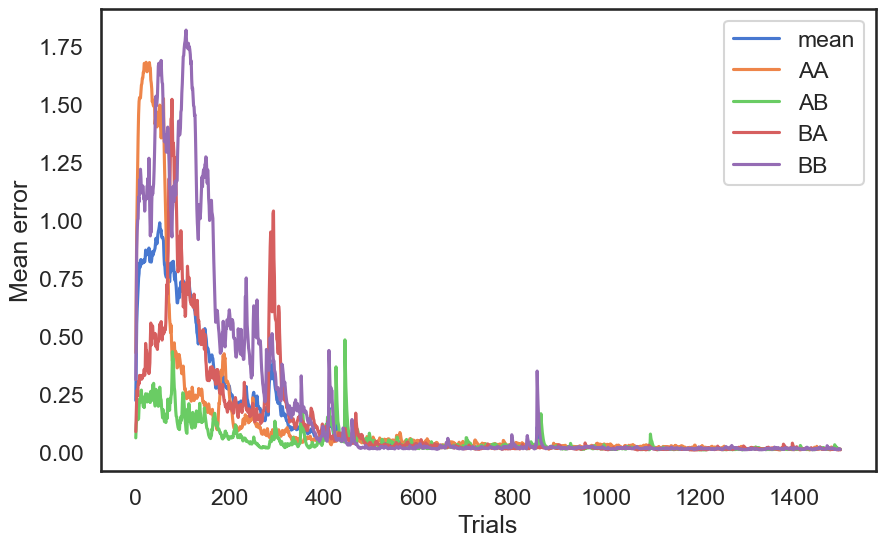

!pip install ANNarchyMiconi network
Download the Jupyter notebook: Miconi.ipynb
Run it directly on colab: Miconi.ipynb
Reward-modulated recurrent network based on:
Miconi T. (2017). Biologically plausible learning in recurrent neural networks reproduces neural dynamics observed during cognitive tasks. eLife 6:e20899. doi:10.7554/eLife.20899
from ANNarchy import *
clear()
setup(dt=1.0)Each neuron in the reservoir follows the following equations:
\tau \frac{dx(t)}{dt} + x(t) = \sum_\text{input} W^\text{IN} \, r^\text{IN}(t) + \sum_\text{rec} W^\text{REC} \, r(t) + \xi(t)
r(t) = \tanh(x(t))
where \xi(t) is a random perturbation at 3 Hz, with an amplitude randomly sampled between -A and +A.
We additionally keep track of the mean firing rate with a sliding average:
\tilde{x}(t) = \alpha \, \tilde{x}(t) + (1 - \alpha) \, x(t)
The three first neurons keep a constant rate throughout learning (1 or -1) to provide some bias to the other neurons.
neuron = Neuron(
parameters = """
tau = 30.0 : population # Time constant
constant = 0.0 # The four first neurons have constant rates
alpha = 0.05 : population # To compute the sliding mean
f = 3.0 : population # Frequency of the perturbation
A = 16. : population # Perturbation amplitude. dt*A/tau should be 0.5...
""",
equations="""
# Perturbation
perturbation = if Uniform(0.0, 1.0) < f/1000.: 1.0 else: 0.0
noise = if perturbation > 0.5: A*Uniform(-1.0, 1.0) else: 0.0
# ODE for x
x += dt*(sum(in) + sum(exc) - x + noise)/tau
# Output r
rprev = r
r = if constant == 0.0: tanh(x) else: tanh(constant)
# Sliding mean
delta_x = x - x_mean
x_mean = alpha * x_mean + (1 - alpha) * x
"""
)The learning rule is defined by a trace e_{i, j}(t) for each synapse i \rightarrow j incremented at each time step with:
e_{i, j}(t) = e_{i, j}(t-1) + (r_i (t) \, x_j(t))^3
At the end T of a trial, a normalized reward (R -R_\text{mean}) is delivered and all weights are updated using:
\Delta w_{i, j} = - \eta \, e_{i, j}(T) \, (R -R_\text{mean})
All traces are then reset to 0 for the next trial. Weight changes are clamped between -0.0003 and 0.0003.
As ANNarchy applies the synaptic equations at each time step, we need to introduce a boolean learning_phase which performs trace integration when 0, weight update when 1.
synapse = Synapse(
parameters="""
eta = 0.5 : projection # Learning rate
learning_phase = 0.0 : projection # Flag to allow learning only at the end of a trial
error = 0.0 : projection # Reward received
mean_error = 0.0 : projection # Mean Reward received
max_weight_change = 0.0003 : projection # Clip the weight changes
""",
equations="""
# Trace
trace += if learning_phase < 0.5:
power(pre.rprev * (post.delta_x), 3)
else:
0.0
# Weight update only at the end of the trial
delta_w = if learning_phase > 0.5:
eta * trace * (mean_error) * (error - mean_error)
else:
0.0 : min=-max_weight_change, max=max_weight_change
w -= if learning_phase > 0.5:
delta_w
else:
0.0
"""
)We model the DNMS task of Miconi. The RC network has two inputs A and B. The reservoir has 200 neurons, 3 of which have constant rates.
# Input population
inp = Population(2, Neuron(parameters="r=0.0"))
# Recurrent population
N = 200
pop = Population(N, neuron)
pop[0].constant = 1.0
pop[1].constant = 1.0
pop[2].constant = -1.0
pop.x = Uniform(-0.1, 0.1)Input weights are uniformly distributed between -1 and 1.
Recurrent weights and normally distributed, with a coupling strength of g=1.5 (edge of chaos).
Connections are all-to-all (fully connected).
# Input weights
Wi = Projection(inp, pop, 'in')
Wi.connect_all_to_all(weights=Uniform(-1.0, 1.0))
# Recurrent weights
g = 1.5
Wrec = Projection(pop, pop, 'exc', synapse)
Wrec.connect_all_to_all(weights=Normal(0., g/np.sqrt(N)), allow_self_connections=True)<ANNarchy.core.Projection.Projection at 0x11959cc70>compile()The output of the reservoir is chosen to be the neuron of index 100.
output_neuron = 100We record the rates inside the reservoir:
m = Monitor(pop, ['r'])Parameters defining the task:
# Compute the mean reward per trial
R_mean = np.zeros((2, 2))
alpha = 0.75 # 0.33
# Durations
d_stim = 200
d_delay= 200
d_response = 400
d_execution= 200Definition of a DNMS trial (AA, AB, BA, BB):
def dnms_trial(trial, first, second, printing=False):
global R_mean
traces = []
# Reinitialize network
pop.x = Uniform(-0.1, 0.1).get_values(N)
pop.r = np.tanh(pop.x)
pop[0].r = np.tanh(1.0)
pop[1].r = np.tanh(1.0)
pop[2].r = np.tanh(-1.0)
# First input
inp[first].r = 1.0
simulate(d_stim)
# Delay
inp.r = 0.0
simulate(d_delay)
# Second input
inp[second].r = 1.0
simulate(d_stim)
# Relaxation
inp.r = 0.0
simulate(d_response)
# Read the output
rec = m.get()
# Compute the target
target = 0.98 if first != second else -0.98
# Response is over the last 200 ms
output = rec['r'][-int(d_execution):, output_neuron] # neuron 100 over the last 200 ms
# Compute the error
error = np.mean(np.abs(target - output))
if printing:
print('Target:', target, '\tOutput:', "%0.3f" % np.mean(output), '\tError:', "%0.3f" % error, '\tMean:', "%0.3f" % R_mean[first, second])
# The first 25 trial do not learn, to let R_mean get realistic values
if trial > 25:
# Apply the learning rule
Wrec.learning_phase = 1.0
Wrec.error = error
Wrec.mean_error = R_mean[first, second]
# Learn for one step
step()
# Reset the traces
Wrec.learning_phase = 0.0
Wrec.trace = 0.0
_ = m.get() # to flush the recording of the last step
# Update the mean reward
R_mean[first, second] = alpha * R_mean[first, second] + (1.- alpha) * error
return rec, tracesfrom IPython.display import clear_output
printing = False
# Many trials of each type
mean_rewards = []
try:
for trial in range(1500):
if printing:
clear_output(wait=True)
print('Trial', trial)
# Perform the four different trials successively
recordsAA, tracesAA = dnms_trial (trial, 0, 0, printing)
recordsAB, tracesAB = dnms_trial (trial, 0, 1, printing)
recordsBA, tracesBA = dnms_trial (trial, 1, 0, printing)
recordsBB, tracesBB = dnms_trial (trial, 1, 1, printing)
# Record the initial trial
if trial == 0:
initialAA = recordsAA['r']
initialAB = recordsAB['r']
initialBA = recordsBA['r']
initialBB = recordsBB['r']
mean_rewards.append(R_mean.copy())
except KeyboardInterrupt:
passimport matplotlib.pyplot as plt
import seaborn as sns
sns.set(style="white", palette="muted", color_codes=True)
sns.set_context("talk")
mean_rewards = np.array(mean_rewards)
plt.figure(figsize=(10, 6))
plt.plot(mean_rewards.mean(axis=(1,2)), label='mean')
plt.plot(mean_rewards[:, 0, 0], label='AA')
plt.plot(mean_rewards[:, 0, 1], label='AB')
plt.plot(mean_rewards[:, 1, 0], label='BA')
plt.plot(mean_rewards[:, 1, 1], label='BB')
plt.xlabel("Trials")
plt.ylabel("Mean error")
plt.legend()
plt.figure(figsize=(10, 8))
ax = plt.subplot(221)
ax.plot(np.mean(initialAA[:, output_neuron:output_neuron+1], axis=1), label='before')
ax.plot(np.mean(recordsAA['r'][:, output_neuron:output_neuron+1], axis=1), label='after')
ax.set_ylim((-1., 1.))
ax.legend()
ax.set_title('Output AA -1')
ax = plt.subplot(222)
ax.plot(np.mean(initialBA[:, output_neuron:output_neuron+1], axis=1), label='before')
ax.plot(np.mean(recordsBA['r'][:, output_neuron:output_neuron+1], axis=1), label='after')
ax.set_ylim((-1., 1.))
ax.legend()
ax.set_title('Output BA +1')
ax = plt.subplot(223)
ax.plot(np.mean(initialAB[:, output_neuron:output_neuron+1], axis=1), label='before')
ax.plot(np.mean(recordsAB['r'][:, output_neuron:output_neuron+1], axis=1), label='after')
ax.set_ylim((-1., 1.))
ax.set_title('Output AB +1')
ax = plt.subplot(224)
ax.plot(np.mean(initialBB[:, output_neuron:output_neuron+1], axis=1), label='before')
ax.plot(np.mean(recordsBB['r'][:, output_neuron:output_neuron+1], axis=1), label='after')
ax.set_ylim((-1., 1.))
ax.set_title('Output BB -1')
plt.show()